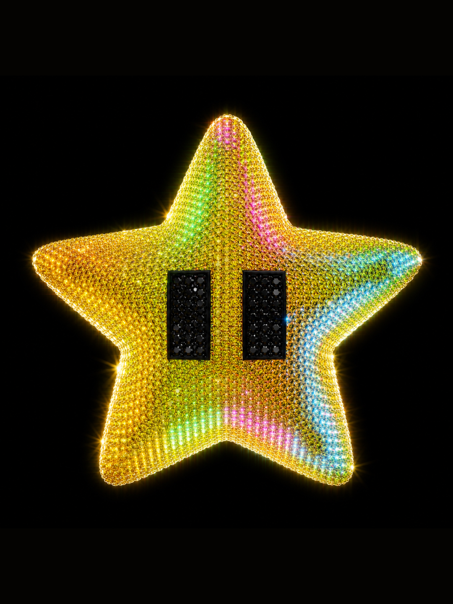
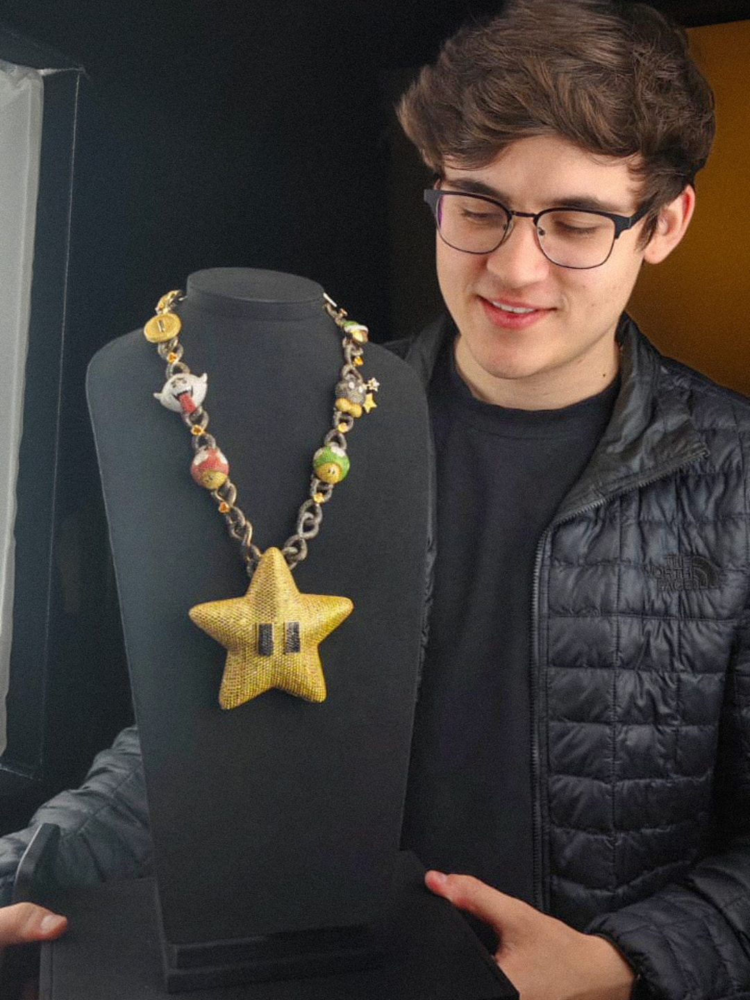
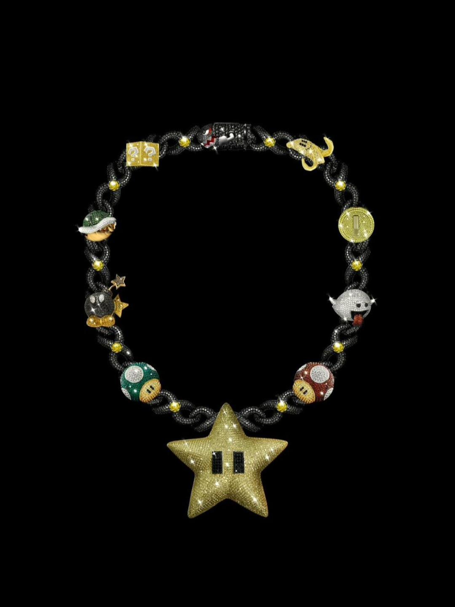
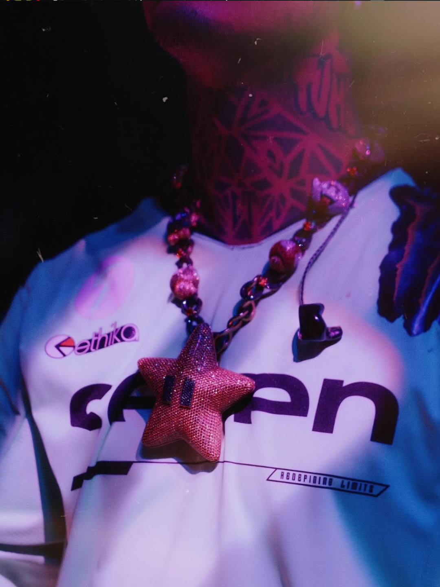
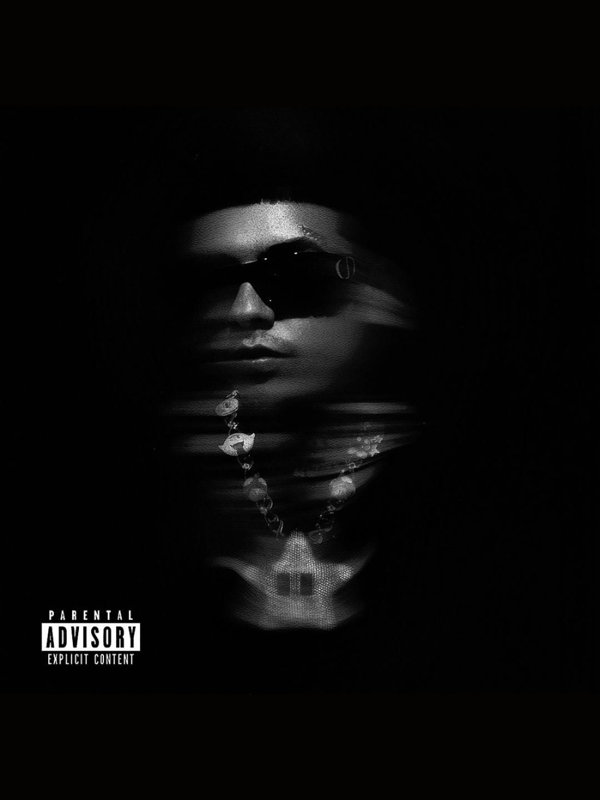
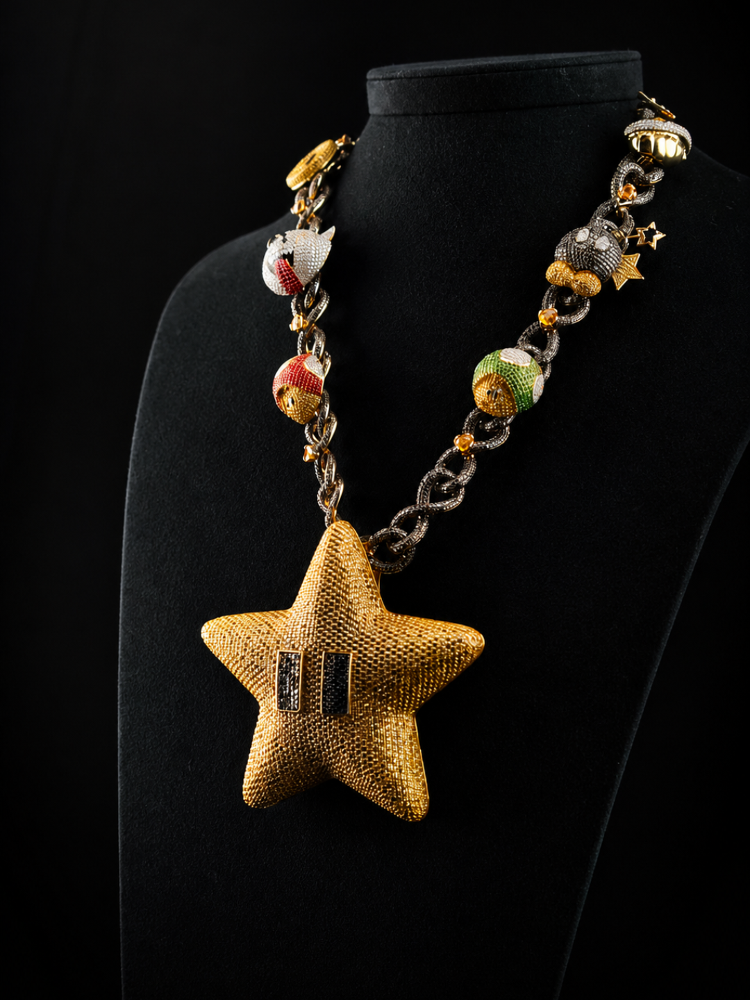

Dije & Cadena Signature diseñado para Natanael Cano. Modelado 3D de precisión, producción artesanal en oro amarillo 18k con gema central.






Especificaciones
El proceso
Dije icónico inspirado en la estrella de Mario Bros, diseñado en oro amarillo 18k con acabado pulido espejo y gema central. El proceso comenzó con un brief detallado del artista, traducido a un modelo 3D de alta precisión en Blender.
El modelado 3D permitió explorar múltiples variantes de proporción y acabado antes de comprometerse con la producción artesanal, reduciendo tiempos de iteración y asegurando que el resultado final coincidiera exactamente con la visión del artista.
La cadena tipo figaro de 60 cm fue diseñada en conjunto con el dije para lograr un balance visual y de peso óptimo. Cierre de seguridad de precisión incluido. Pieza única producida a mano por los maestros artesanos del taller.